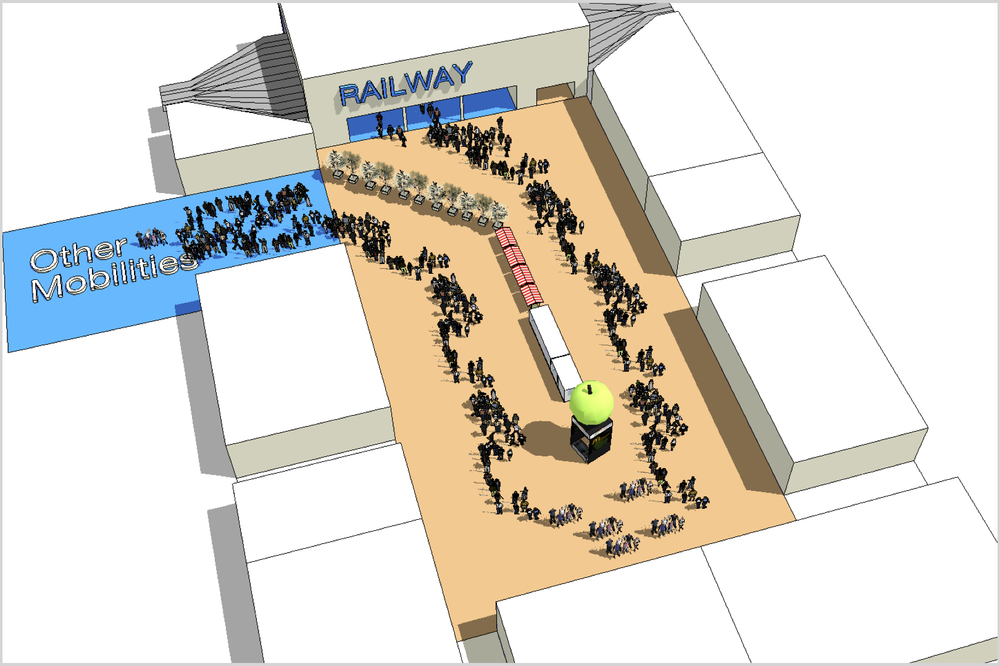

Contexts & Problems: Adaptive redundant spaces with path regulation should be used if a station has the following dilemma: 1) The station has Redundant spaces or setting apart bottlenecks (18 19) to reduce overcrowding during peak times; But 2) during non-peak times, the added long transfer distance by redundant spaces annoys passengers.
Solutions & Examples: Regulating paths solves the above peak-time redundancy and non-peak-time transfer effi- ciency dilemma. It is similar to Shortcuts or optimizing paths (P13).
During peak times, it is a common practice to regulate the path by fences or lines (fig. 29) to ensure pedestrians move in an orderly queue, which prevents pedestrians from concentrating randomly, leading to stampedes.
Instead of fences or lines, which are quite intrusive elements, paths can also be regulated by more user-friendly, even interactive design elements, such as urban furniture, Reconfigurable elements (17) - water bodies, fountains, potted plants, art installations, stalls, and so on (fig. 30).
To further satisfy the waiting passengers in the regulated zigzag paths, it is beneficial to create a pleasant environment of staying, compensating for the longer waiting time than usual.
During non-peak times, the path-regulating elements can be removed to let pedestrians move freely. Human-oriented spaces (7) is a prerequisite for redundant space to be adaptively used during non-peak times.
In Chinese station cases, path regulations (using fences) are more commonly seen during peak times. In the Nether- lands, however, it is less common.
Limitations: Path regulations can easily raise complaints from passengers or nearby citizens; therefore, they should be used sparingly with strong necessity.

Regulate path using pleasant reconfigurable elements